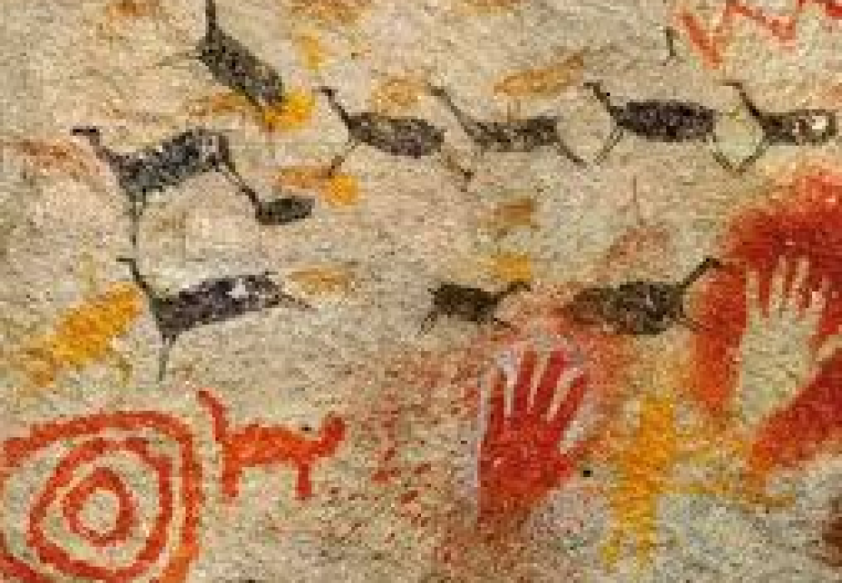
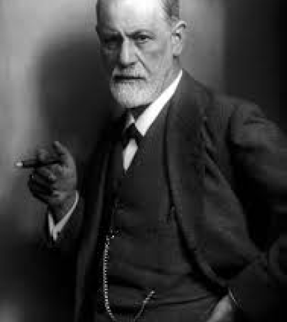
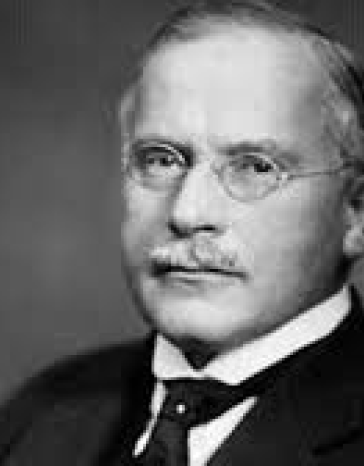
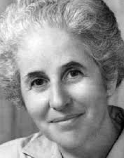
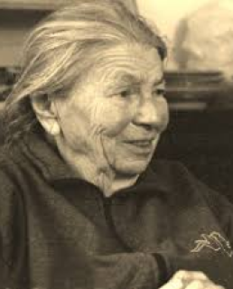

Linha
do
Tempo
Pré-história – Antiguidade
Expressões artísticas já eram usadas em rituais de cura por povos antigos (pinturas rupestres, danças e máscaras).
1900–1930
 Sigmund Freud e Carl Jung destacam o papel simbólico das imagens no inconsciente. Jung começa a usar desenhos de mandalas em terapias.
1940
 Margaret Naumburg e Edith Kramer desenvolvem métodos que estruturam a arte-terapia moderna nos EUA: Naumburg: Arte como expressão do inconsciente. Kramer: Arte com foco no processo criativo.
1970-1980

A prática da Arteterapia se expandiu para outros países, como Canadá, Austrália, e Brasil. Começou a ser aplicada em diversas áreas além da psiquiatria, como educação, reabilitação física, inclusão social e prevenção de doenças. Também ganhou espaço em clínicas e centros comunitários, consolidando-se como prática terapêutica acessível e interdisciplinar.
1990

A Arteterapia passou a dialogar com os avanços da neurociência e da psicologia humanista, ganhando respaldo teórico e científico. Pesquisas começaram a comprovar seus benefícios na regulação emocional, no alívio do estresse e no desenvolvimento da autoestima, especialmente em populações vulneráveis, como idosos, crianças e pessoas com transtornos mentais.
2000
Com a crescente valorização das práticas integrativas em saúde, a Arteterapia ganhou reconhecimento acadêmico e passou a ser oferecida em cursos de graduação e pós-graduação em vários países, inclusive no Brasil. O campo passou a contar com conselhos, associações e regulamentações que profissionalizaram o trabalho do arteterapeuta.
Atualidade(2020-2025)

Hoje, a Arteterapia está em constante atualização, incorporando tecnologias digitais e recursos virtuais, como pintura digital, animação e realidade aumentada. É também reconhecida como Prática Integrativa e Complementar (PIC) pelo SUS no Brasil. Cada vez mais, é utilizada em diferentes contextos: clínicas, escolas, empresas, hospitais e ambientes virtuais.